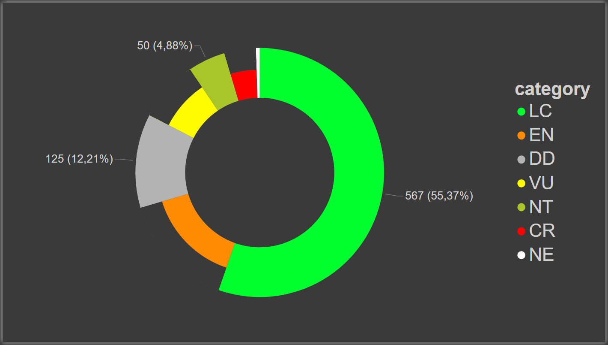

Leguminosae
states and fates of the Brazilian flora conservation
Jordão, L.S.B., Amorim, E.T., Aragão, L.A., Bicalho, M.B., Calfo, V., Ferreira, G.C., Gomes, M., Mello, P.H.A., Wimmer, F.C., Fernandez, E., et al.
species in Brazil: 3,068
assessed: 1,024 ( 33.4% )

not threatened: 747 ( 73% )
threatened: 277 ( 27% )
threatened species: 277 ( 27% )
Biomas
Mata Atlântica

Cerrado

Amazônia

Caatinga
Pampa
Pantanal
Mimosa